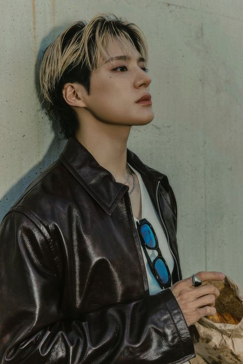
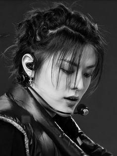

Jimin BTS Jimin is a member of BTS, one of the most popular boybands of all time from South Korea.  Jeno NCT Lee Jeno is a member of NCT DREAM and takes on the role of Captain in the team.  Yuta NCT Nakamoto Yuta is a Japanese singer and actor who is part of NCT 127, serving as a rapper and vocalist. Haruto Treasure Watanabe Haruto is a Japanese singer and a member of TREASURE, known as a rapper and visual.